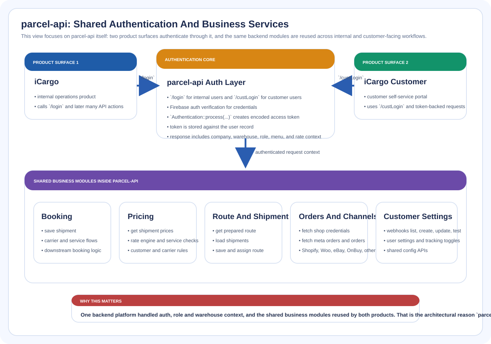

Visual Overview

Reference visual summarizing the shared auth context and cross-product services behind parcel-api.
Shared Backend
parcel-api was the shared backend platform behind both the internal iCargo operations UI and the iCargo Customer portal.

Reference visual summarizing the shared auth context and cross-product services behind parcel-api.
This is the central business layer story. It shows one backend serving multiple product surfaces instead of a small helper API.
parcel-api connects the main iCargo product, customer portal, and several integration-heavy services.